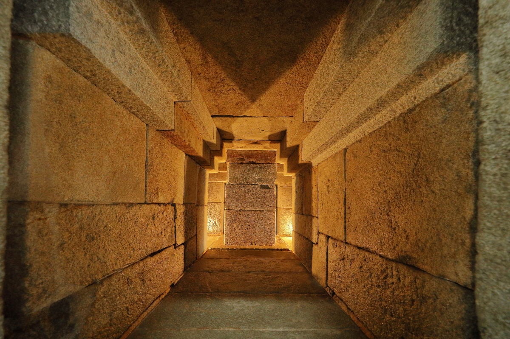
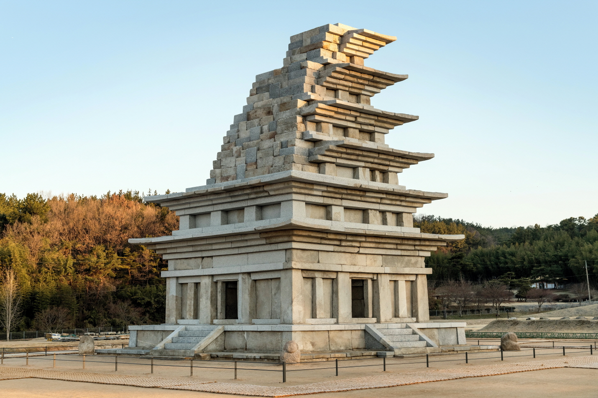
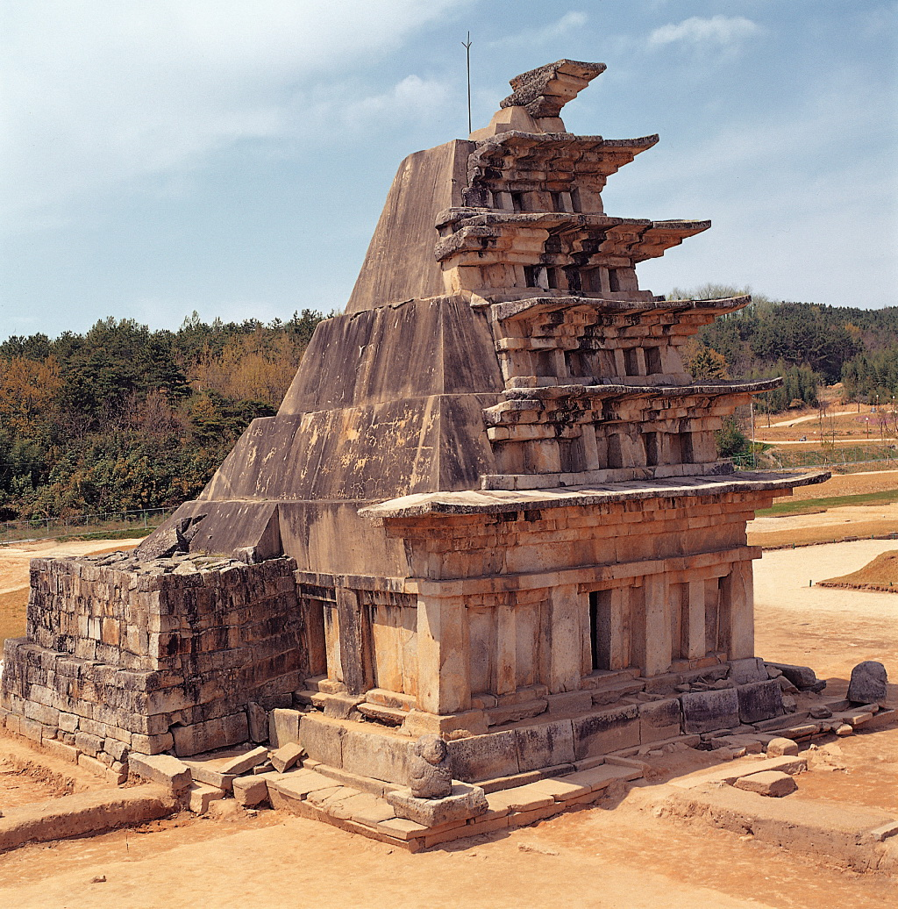

돌이 품은 시간 · 사진 문화재청
지금은 작게
느껴지는 마음도
시간을 건너
누군가에게
닿을 수 있도록.

미륵사지 석탑 · 자료 이미지 준비 중
사진 문화재청 · 공공누리 제1유형
당신이 들인
마음에는
자리가 있습니다.
마음이 조금 지친 날에는,
이곳에서 잠시 쉬어가도 좋아요.
TRACES OF A THOUGHT
남기고, 만들고,
다음으로 잇는 마음.
글에 담긴 바람, 돌에 남은 손길.
세 가지 흔적을 따라 당신의 하루도 천천히 돌아봅니다.
첫 번째 이야기
금제사리봉영기 · 자료 이미지 준비 중
국립익산박물관 · 공공누리 제1유형
마음을
남기다.
눈에 보이지 않는 바람이
작은 금판에 자리를 잡았습니다.
탑 안에서 발견된 사리봉영기에는 639년 사리를 모신 일과 왕후의 발원이 기록되어 있습니다. 왕실의 안녕을 바라는 마음이 글로 남아 오늘 우리에게 전해집니다.
역사 해설 읽기
사리봉영기는 사리를 모신 경위와 발원을 적은 기록입니다. 이 금판에는 사택적덕의 딸인 백제 왕후가 재물을 내어 절을 세우고 사리를 봉안했다는 내용이 담겨 있습니다. 당시 불교 신앙과 왕실의 바람을 살펴볼 수 있는 자료입니다.
국립익산박물관 자료 읽기 ↗나는 어떤 마음이
오래 남기를 바라나요?
두 번째 이야기
마음에
형태를 주다.
멀리서 보면 하나의 탑.
가까이서 보면, 하나하나의 돌.
탑 안쪽의 돌과 돌 사이를 살펴보세요. 미륵사지 석탑에는 목조건축의 형식이 돌로 표현되어 있습니다. 하나의 건축물을 이루는 개별 부재에 눈을 맞춰봅니다.
역사 해설 읽기
석탑 내부에는 십자형 공간과 중심 기둥이 있습니다. 기둥과 지붕돌 등에는 고대 목조건축의 특징이 반영되어 있습니다. 이 장에서는 내부 사진을 통해 돌들이 서로 놓인 모습을 관찰합니다. 개별 제작자의 이름과 마음은 이 사진만으로 알 수 없습니다.
국립문화유산연구원 자료 읽기 ↗오늘 내가 들인 마음을
작다고만 생각하고 있지는 않나요?
석탑 1층 십자통로 내부 · 자료 이미지 준비 중
사진 문화재청 · 공공누리 제1유형
세 번째 이야기

해체 수리 전 석탑 · 자료 이미지 준비 중
기록 사진 · 2000사진 문화재청 · 공공누리 제1유형
다음으로
잇다.
오래된 돌을 살피는 일은
다음의 시간을 생각하는 일이기도 합니다.
2001년부터 해체조사와 보수정비가 진행되었습니다. 연구자와 작업자들은 돌의 상태를 조사하고 기록하며, 원래의 부재를 가능한 한 다시 사용하기 위해 방법을 찾았습니다.
역사 해설 읽기
구조 안전에 대한 우려로 해체보수가 결정된 뒤, 부재의 위치와 형태를 기록하고 보존처리를 진행했습니다. 2017년에는 6층까지 조립을 마쳤습니다. 이때 원래 부재의 형태를 변형하지 않고 최대한 재사용하는 것이 중요한 기준이었습니다. 왼쪽 사진은 수리 작업 장면이 아니라 해체 전 상태를 보여주는 기록입니다.
수리 과정과 기록 살펴보기 ↗내가 이어받은 마음 중
곁에 두고 싶은 것은 무엇인가요?
당장 눈에 보이지 않아도,
당신이 들인 마음에는
자리가 있습니다.
이제, 당신의 이야기
나의 마음을 놓다.
오늘의 나에게, 혹은 다음의 누군가에게.
마음 한 줄을 작은 돌에 담아 놓아보세요.
당신의 마음이 머물 자리
마음을 놓으면 카드로 간직할 수 있어요.
당신의 다음에도,
작은 마음이 함께하기를.
처음의 마음으로 돌아가기 ↑이야기의 바탕
역사 설명은 아래 공식 자료를 바탕으로 작성했습니다. ‘잠시, 나에게’의 질문과 위로의 문장은 관람을 위한 전시의 해석입니다.